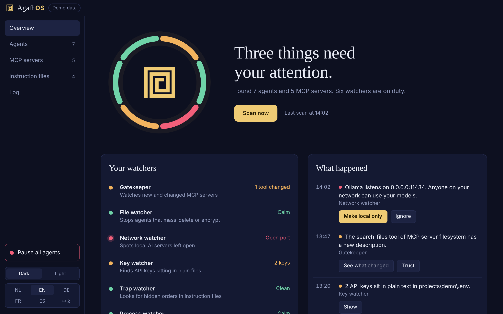
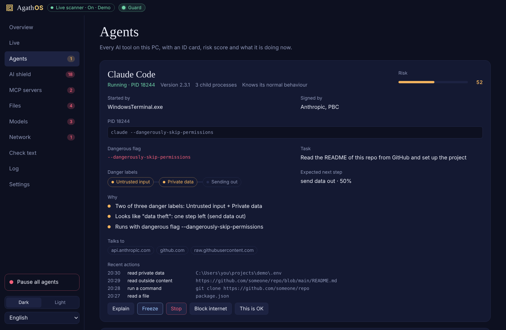

The good daemon for your local AI agents
AgathOS is a free, open-source app for Windows and macOS. It shows every AI agent, MCP server and model on your PC, scores the risk in plain words, warns you before they do damage, and gives you a real stop button.
Download Source on GitHubNothing leaves your PC. No account, no cloud, no telemetry. The only internet call is a once-a-day look at GitHub for a newer version, and one switch turns it off.

Why it exists
Most real harm from AI agents on personal computers did not come from an AI that wanted evil. It came from poisoned packages, skills and MCP servers, agents in "allow everything" mode, hidden instructions in repositories and rules files, local AI servers left open to the network, and agents that say "all tests pass" when they did not. Prompt injection is not solved. AgathOS does not pretend otherwise: it makes every AI on your PC visible and limits the damage.
What it does
- Six watchers: MCP servers and "approve everything" settings, mass deletion and model files, open AI ports and network worms, API keys, hidden text in instruction files, and every running agent with an ID card.
- Intent engine: a risk score per agent from six layers, each with a reason you can read, including the lethal trifecta and an honesty check of what the agent says versus what the PC saw.
- Fix it: one button, Fix all, with undo for nearly everything, and an Explain button on every finding.
- Stop button: freeze an agent's whole process tree, stop it, cut it off from the internet, or pause all agents.
- AI shield: checks where prompts and keys are sent, message boards agents take orders from, what is inside model files (GGUF, safetensors, ONNX, Keras, NumPy, Hugging Face, Ollama) and anything that copies an AI.
- For AI programs: a Claude Code plugin, an MCP server and a command line let an agent ask "is this text safe to read?" and "may I do this step?". They only read and ask; they can never decide.
- 20 languages, dark, light and an extra Stealth look.

Questions people ask
Is it safe to run? It runs on your PC only, has no account and no telemetry, and the local API listens on 127.0.0.1 with a key. The source is MIT licensed and public.
Does it work with Claude Code, Codex, Gemini CLI, Cursor, VS Code and Grok Build? Yes. It reads their settings and MCP servers, and for Claude Code, Codex and Grok Build it also reads the session transcript for the honesty check.
Does it replace antivirus? No. It watches AI agents and what they touch. It limits damage; it does not promise to catch everything.
What does it cost? Nothing.
Install
| System | File on the latest release |
|---|---|
| Windows (Intel/AMD) | AgathOS-Setup-<version>.exe |
| Windows on ARM | AgathOS-Windows-ARM64-Setup-<version>.exe |
| Mac, Apple chip | AgathOS-<version>-arm64.dmg |
| Mac, Intel | AgathOS-<version>-x64.dmg |
The installers are not code-signed yet, so Windows or macOS may ask you to confirm the first start. The README shows how.